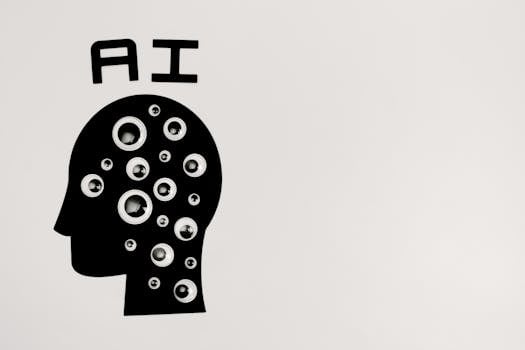

Claude 被美國政府封殺、Block 裁掉一半人——AI 時代的職場警報響了
本文是 YouTube 影片「Claude 被美國封殺！Block 裁掉一半員工！AI 時代你該怎麼辦？」的延伸閱讀版。 影片講了核心觀念，本文加上獨家數據分析和各大 AI 廠商立場比較。 影片版本：https://www.youtube.com/watch?v=WutXPEFFoOU
影片重點回顧
這支影片講了兩件幾乎同時發生的大事。
第一件：Block（前身是 Square，旗下還有 Cash App）的 CEO Jack Dorsey 宣布裁員超過 4,000 人，公司從原本的 1 萬多人直接砍到 6,000 人以下。Dorsey 說得很直白——「不是公司業績不好，是 AI 讓我們不需要這麼多人了。」
第二件：Anthropic（Claude 的母公司）拒絕了美國國防部要求解除 AI 安全限制的要求，結果被 Trump 政府全面封殺，要求所有聯邦機構在 6 個月內停用 Claude。Anthropic CEO Dario Amodei 的底線只有兩條：不讓 AI 用來大規模監控美國人民，不讓 AI 驅動全自動殺人武器。
這兩件事放在一起，說明了一件事：AI 已經不是科技圈的話題，它是政治、是商業決策、是你飯碗的問題。
【獨家】Block 裁員數據深度分析：業績創新高，人卻砍一半
Photo by RDNE Stock project on Pexels
很多人第一個反應是：「Jack Dorsey 是不是在說謊？業績不好才裁員吧？」
我幫你查了數據，結果讓人不太舒服。
Block 歷年員工人數與營收對照：
- 2021 年：員工 8,521 人，年營收 177 億美元
- 2022 年：員工 12,428 人，年營收 175 億美元（擴張期，但營收反而微降）
- 2023 年：員工 12,985 人，年營收 200 億美元
- 2024 年：員工 11,372 人，年營收 241 億美元（已開始瘦身）
- 2026 年 2 月（此次裁員後）：員工約 6,000 人以下
你看出問題了嗎？
Block 的營收從 2021 到 2024 成長了 36%，但員工數在 2022 年達到高峰之後，公司就開始認真算帳了。Dorsey 的判斷是：當 AI 工具快速進步，再養 1 萬多人只是燒錢。
更讓人正視的是他說的這句話：「我預測在未來一年內，大多數公司都會做出一樣的結構性調整。我寧願誠實地主動做，也不願被迫反應式地做。」
這不是在恐嚇。這是一個已經看到趨勢的創業者，在告訴其他 CEO：你們遲早也得做。
這次裁員背後有三個訊號值得記住：
第一，AI 取代的不是某個特定職位，而是「整體所需人力」的規模。你不會因為某個單一工作被取代而失業，而是整間公司發現它只需要 60% 的人就能運作一樣好。
第二，Dorsey 說「業績好，但還是要裁員」——這個邏輯以後會越來越普遍。不是公司快倒了，是公司不再需要你了。
第三，Block 給了被裁員工六個月醫療保險加上 5,000 美元的轉職補助。這個數字說明他們知道這些人很難快速找到「一樣的工作」。
【獨家】AI 安全底線：各大廠的態度比較

Photo by Tara Winstead on PexelsAnthropic 被封殺這件事，表面上看是政治問題，但背後其實是整個 AI 產業對「我的產品要不要有底線」的態度分歧。
我整理了四家主要 AI 廠的立場：
Anthropic（Claude）
Dario Amodei 直接說：「我們無法在良心上答應五角大廈的要求。」他的底線是兩件事——不讓 Claude 被用來大規模監控美國人民，不讓 Claude 驅動全自動武器系統（也就是沒有人在迴路裡的殺人機器）。結果被 Trump 簽令封殺，Defence Secretary Pete Hegseth 宣布 Anthropic 是「供應鏈風險」，聯邦政府與承包商全面停止合作。
OpenAI（ChatGPT）
Anthropic 被封殺的幾個小時後，OpenAI 宣布與國防部簽署合作協議，將 AI 技術導入機密網路。CEO Sam Altman 說：「我有信心這個技術不會用於國內大規模監控或自主武器。」——但他選擇簽約，不是拒絕。這個落差很關鍵。值得注意的是，OpenAI 內部員工事後也連署公開信，要求公司畫出明確的「紅線」。
Google（Gemini）
Google 在 2025 年 2 月翻轉了它自己制定的「不做武器或監控的 AI」禁令，開始接受國防相關合約。GenAI.mil（美國軍方的 AI 平台）最初就是用 Google Cloud 的 Gemini for Government 驅動的。Google DeepMind 員工也有簽署抗議連署，但公司的商業決策沒有改變。
xAI（Grok）
Elon Musk 的 xAI 同樣有接國防部合約，Grok 被加入 GenAI.mil 平台。Musk 本人在 Trump 政府中擔任顧問角色，政治立場讓 xAI 天然站在政府這一側。
看出來了嗎？
在這場「AI 要不要有安全底線」的角力裡，Anthropic 是唯一一個說「不」的大廠，然後付出了被全面封殺的代價。其他廠商選擇了市場。
沒有誰對誰錯，但這件事讓我們看清楚：AI 安全，在商業壓力和政治壓力面前，是很脆弱的。
阿峰觀點
 Photo by
Photo by 這兩則新聞放在一起，我想跟你說三件事。
第一，AI 取代人力不是「以後」的事，是「現在」的事。
Block 不是科幻電影裡的公司，它是真實世界裡做支付、做金融服務的企業。Jack Dorsey 裁掉一半人，不是因為公司要倒，是因為 AI 讓他能用一半的人做同樣的事。
台灣企業現在還不敢講這麼直白，但很多主管私下跟我說：「阿峰，我們明年不打算補人了，先用 AI 頂著。」
這不是恐嚇，這是正在發生的事。
第二，AI 已經是國家級戰略武器，不是工具了。
美國總統直接簽令封殺一家 AI 公司，因為它拒絕移除安全限制。這件事告訴你：AI 的角色已經跟核武、半導體一樣，是大國博弈的棋子。
以後 AI 政策、AI 監管，會越來越政治化。這對台灣的 AI 使用者來說，意味著你選哪個工具、哪個平台，背後都有地緣政治的影子。
第三，你現在該做的事只有一件：讓自己成為會用 AI 的人。
我常說：「你是機長，AI 是機組人員。」機組人員再強，也需要機長下指令。
Block 裁掉的 4,000 個人，大部分不是因為他們不努力，而是他們沒有搭上 AI 這班列車。被留下來的人，是那些學會讓 AI 替他們工作的人。
台灣在這件事情上還有一段時間。但這段時間不長。
我在課程裡最常說一句話：「AI 不會取代你，會用 AI 的人會取代你。」
Anthropic 的故事告訴你，連最堅持安全底線的 AI 公司，在政治壓力下都岌岌可危。但有一件事不會改變：那些學會駕馭 AI 的人，永遠比那些等待觀望的人，多一條路走。
現在開始學，還不晚。
本文提到的資源
Claude（Anthropic） https://claude.ai Anthropic 開發的 AI 助理，強調安全性與對齊研究。目前因政治因素被美國政府封殺，但一般使用者仍可正常使用。
ChatGPT（OpenAI） https://chatgpt.com 目前最廣泛使用的 AI 助理，剛與美國國防部簽署合作協議。
Gemini（Google） https://gemini.google.com Google 推出的 AI 助理，已整合進 Google Workspace 生態系。
Grok（xAI） https://grok.com Elon Musk 旗下 xAI 開發，與 X（前 Twitter）平台深度整合。
Block（XYZ）公開財報 https://investors.block.xyz 想看第一手數據，可直接查 Block 投資人關係頁面。
2026 AI 實戰應用課 → https://www.autolab.cloud
延伸閱讀
想更深入學習 AI？
2026 AI 實戰應用課（小班制手把手課程） 6 小時實戰、限額 12 人、從零到會用 https://www.autolab.cloud/2026-ai-course
AI 業務飛輪實戰班 專為業務、行銷設計的 AI 銷售課 https://www.autolab.cloud/ai-business-flywheel
Vibe Coding：AI 麻瓜的程式入門實戰班 帶你跨過那段最痛的學習低谷，做出作品並部署上線 專為上完 AI 工具想要挑戰程式語言做自動化的夥伴 https://www.autolab.cloud/vibe-coding
企業客製化課程
你是企業主管或企業主嗎？想找阿峰老師做企業客製化 AI 課程？
請聯繫老師 LINE ID：0976715102（電話同號）
關於作者
黃敬峰（AI峰哥），企業 AI 實戰培訓專家，400+ 企業合作、10,000+ 學員。 核心心法：「會用、懂用、好用、每天用」 官網：https://www.autolab.cloud